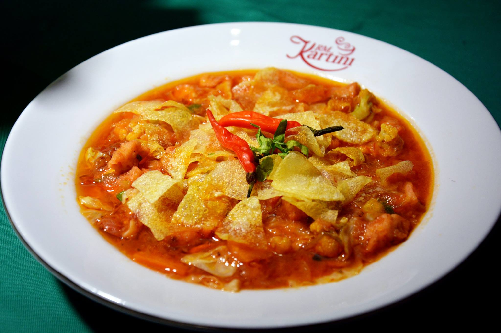

Cake Sumenep
CAKE, adalah nama untuk menyebut sejenis makanan pembuka, semacam sop atau
capcay. CAKE biasa disajikan dalam acara pesta perkawinan sebagai makanan
pembuka, sebelum makanan pokok yang biasanya berupa nasi goreng. Perlu
diketahui, dalam tradisi adat di wilayah Kota Sumenep, hidangan yang disajikan
dalam pesta perkawinan pada umumnya terdiri atas lima tahapan, yakni 1. minum,
2. Snack, 3. Cake, 4. Nasi goreng, 5. Es. Menu makanan cake di Sumenep pertama
kali dibuat pada tahun 1972, oleh Ibu Amaningsih, istri Bapak Imam, seorang
pegawai di Kantor Bimas, Kabupaten Sumenep. Ibu Amaningsih yang pada waktu itu
masih berusia 25 tahun, mendapatkan ilmu membuat menu makanan cake, berkat
kursus memasak yang diadakan oleh IDHATA (Ikatan Dharma Wanita) Kabupaten
Sumenep. Adapun guru yang mengajarkan ilmu memasak menu makanan cake adalah Ibu
Sadiq, seorang guru SKP (Sekolah Kepandaian Putri) Sumenep, yang juga merupakan
guru dari Ibu Amaningsih ketika ia menuntut ilmu di SKP Sumenep.
Tidak
pernah ia menerima ucapan terima kasih dalam bentuk uang. Seandainya ada yang
mau memberi ucapan terima kasih dalam bentuk uang, ia juga tidak akan mau
menerimanya. Sebagai istri seorang pegawai pemerintahan, ia malu jika sampai
menerima tanda terima kasih atas jasa tenaga dan pikirannya dalam memasak cake
dalam bentuk uang, karena hal itu dirasa akan merendahkan martabatnya
seakan-akan menjadi buruh tukang masak. CAKE dibuat dari campuran bahan berupa
daging ayam kampung, lidah sapi, bakwan udang, dengan sayuran berupa wortel,
kol, brokol, dan kentang, dengan bumbu berupa mentega, tomat (saus tomat),
bawang putih, bawang merah, lada, daun prey, dengan kuah berupa air rebusan
tulang ayam kampung. CARA MEMBUAT CAKE: A. Penyiapan bahan: Mula mula disiapkan
daging ayam kampung beserta tulangnya. Daging dilepas dari tulangnya, kemudian
dipotong kecil-kecil dalam keadaan mentah. Daging ayam yang sudah
dipotong-potong digongso dengan menggunakan mentega dan saus tomat. Sementara
itu, tulang-tulangnya direbus untuk nanti airnya digunakan guna membuat kuah.

Bahan kedua, lidah sapi dipotong kecil-kecil kemudian direbus dengan bumbu
garam, sehingga disebut lidah asin. Bahan ketiga, berupa bakwan udang, yakni
bakwan yang dibuat dari daging udang halus dengan dicampur sedikit tepung terigu
dan telur, kemudian dibentuk bulatan kecil panjang, lalu digoreng, kemudian
dipotong kecil-kecil. Bahan keempat adalah sayuran, berupa wortel, kol, dan
brokol, semua dipotong kecil-kecil. Bahan kelima adalah kentang, diiris tipis
kemudian digoreng. B. Penyiapan bumbu Bumbu utama berupa bawang putih, digecek
halus, kemudian digongso dengan menggunakan mentega. Bawang merah, bawang putih
dan daun prey diiris tipis, kemudian digoreng kering. C. Proses Pengolahan Air
rebusan tulang ayam kapung disaring, air hasil saringannya dilanjutkan direbus
hingga mendidih, kemudian dimasukkan saus tomat, bawang putih gecek yang sudah
digongso, merica bubuk, garam. Kemudian, dimasukkan daging ayam yang sudah
digongso boubend dan saus, lidah asin, bakwan udang, dan sayuran. Terakir
dimasukkan bawang putih goreng, bawang merah goreng, dan daun prey goreng. D.
Penyajian CAKE rebus ditata pada sebuah piring, kemudian ditaburi keripik
kentang, dan di atasnya diberi satu buah cabe. CAKE lebih nikmat disantap dalam
keadaan panas